Метапрограммирование и концепты
Пакеты параметров, проверка требований к типам и типобезопасные альтернативы.
Template Metaprogramming
constexpr
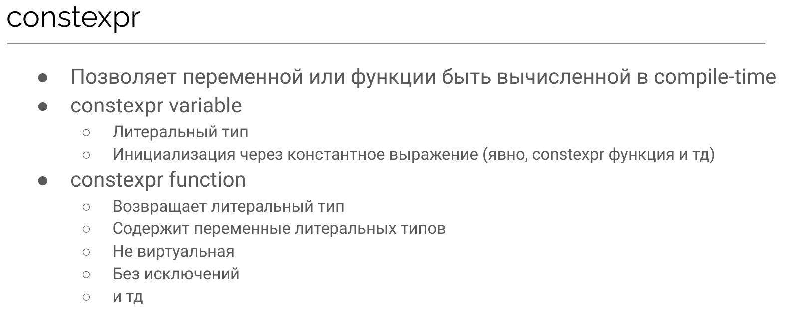
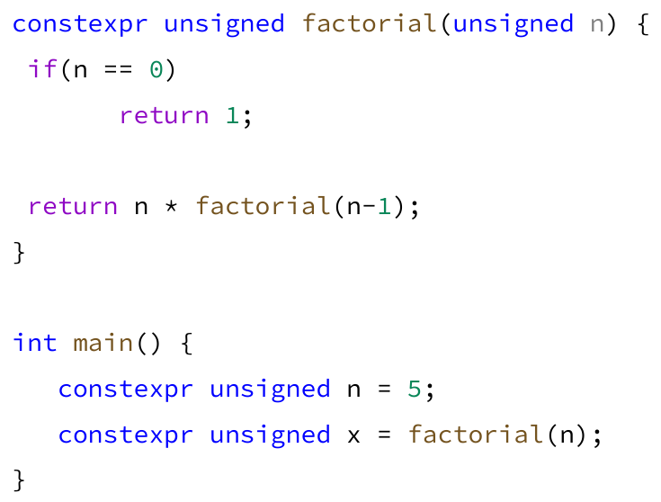
Template Specialization
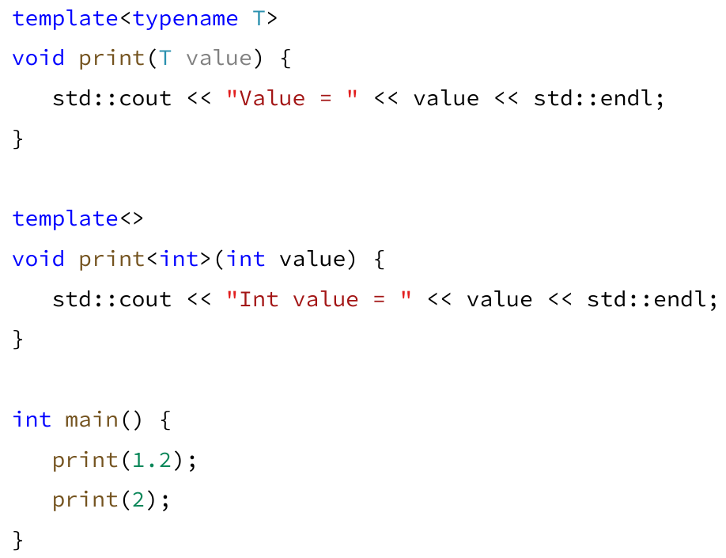
Metaprogramming С++
Метапрограммирование в C++ — это написание программного кода, который выполняется во время компиляции, а не во время работы программы (runtime).
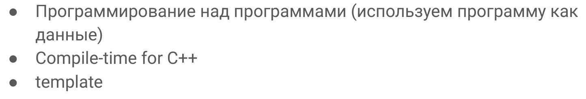
пример: тот же факториал
type_traits
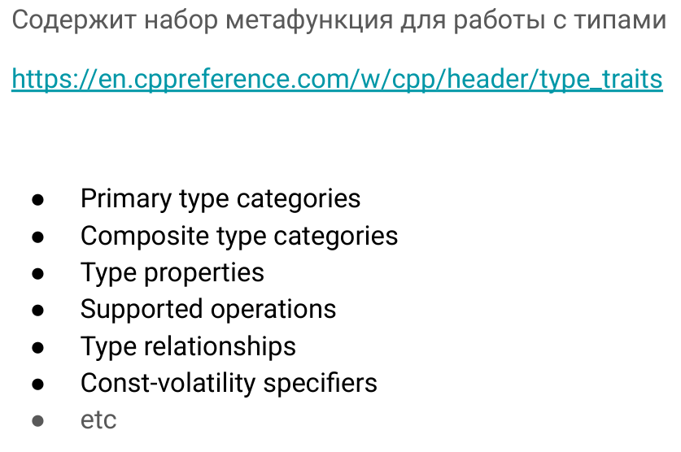
int main(int argc, char** argv) {
int b = 10;
int* a = &b;
assert(std::is_pointer<decltype(b)>::value);
}SFINAE
SFINAE (Substitution Failure Is Not An Error) — это правило компиляции в C++, которое означает: «Неудачная подстановка типа в шаблон не является ошибкой компиляции».
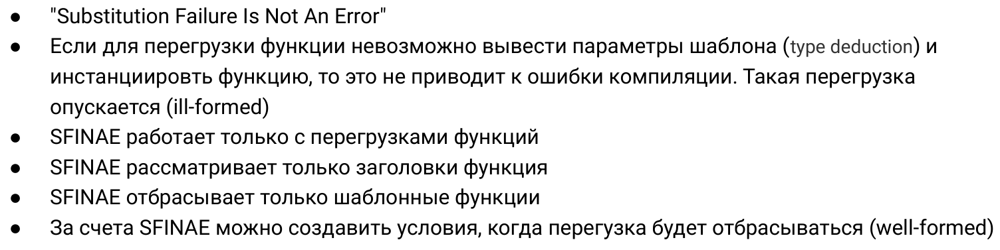
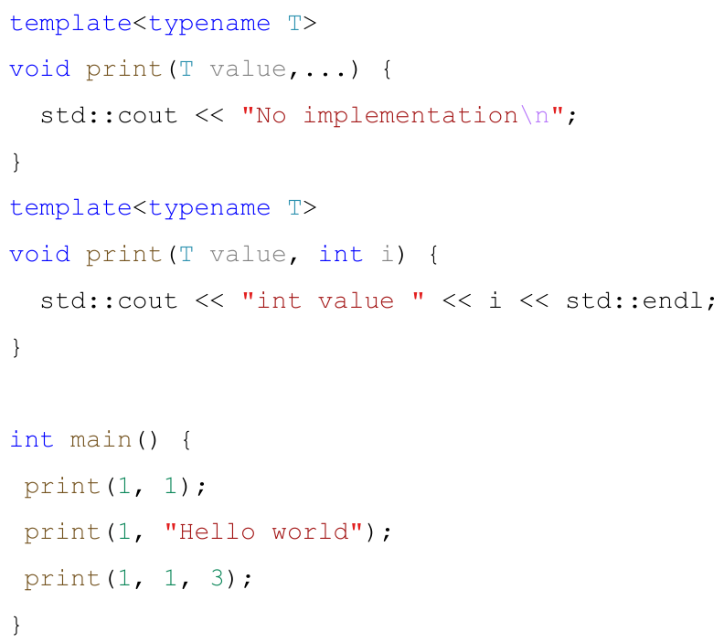
Concepts (C++ 20)
Концепты позволяют задавать ограничения шаблонов явно. Для многих проверок типов они заменяют громоздкие приёмы на основе SFINAE.
В выражении requires можно проверить наличие вложенного типа, допустимость операции или соответствие другому концепту.
Concept нативный
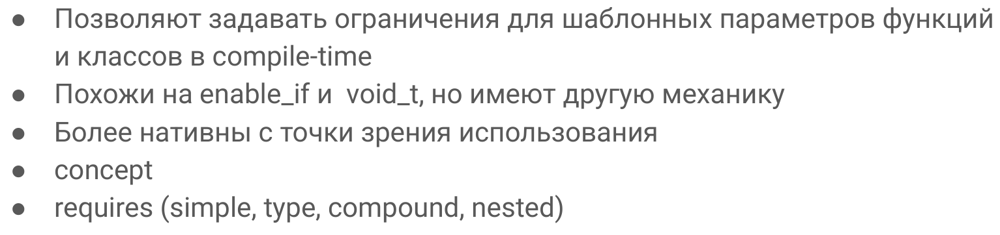
Концепт — это именованное правило (ограничение), которое описывает, каким требованиям должен соответствовать тип данных, чтобы его можно было использовать в шаблоне.
Requires-выражение — это блок кода, внутри которого вы перечисляете конкретные операции, которые должны успешно компилироваться для данного типа.
Если концепт — это название правила, то requires — это список проверок внутри этого правила.
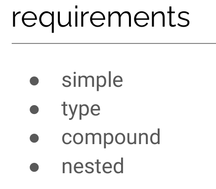
Simple requirement - это когда один requires
Simple requirements (простые требования) в C++ — это вид требований внутри выражения requires (появились в C++20), которые проверяют саму возможность компиляции указанного выражения для заданных типов.
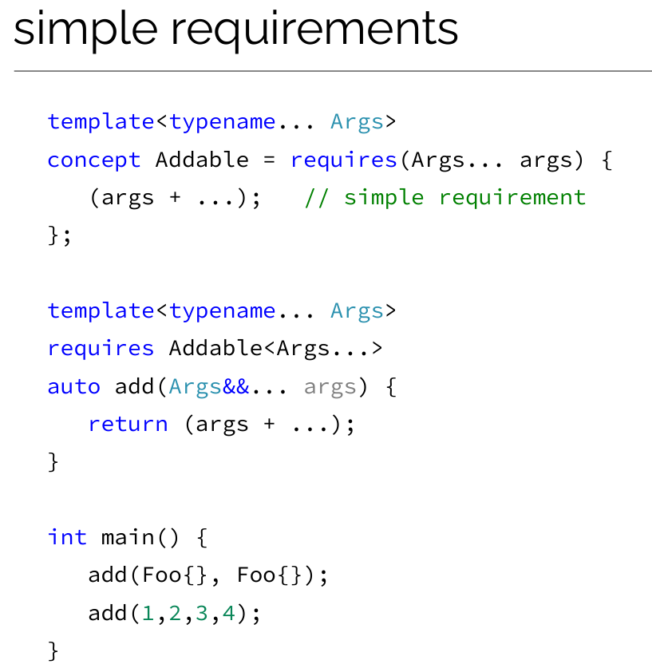
Nested - это когда в концепте есть ещё один requires
Nested requirements (вложенные требования) — это еще один вид требований внутри блока requires в C++20. В отличие от простых требований, которые просто проверяют «компилируется ли код», вложенные требования позволяют проверять логические условия (предикаты).
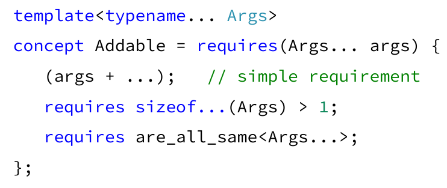
Составные требования
Compound requirements (составные требования) — это самая мощная форма проверок внутри блока requires. Они позволяют проверить не только то, что выражение компилируется, но и наложить условия на результат этого выражения (например, какой тип оно возвращает и может ли оно бросать исключения).
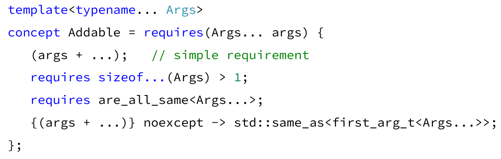
Type requerements
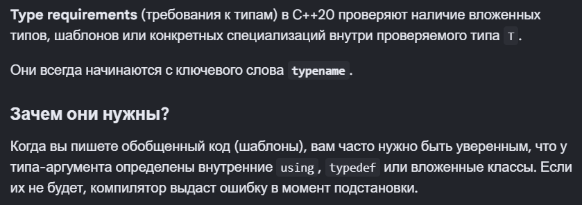
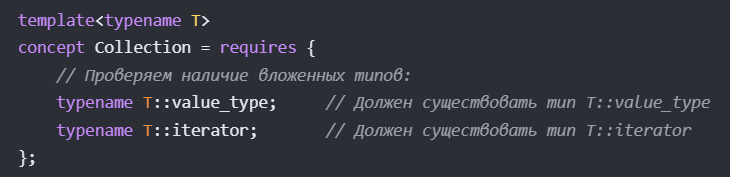